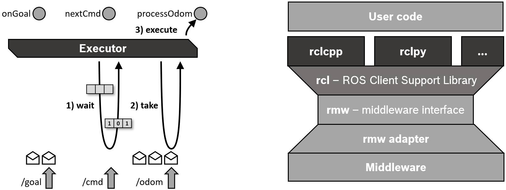
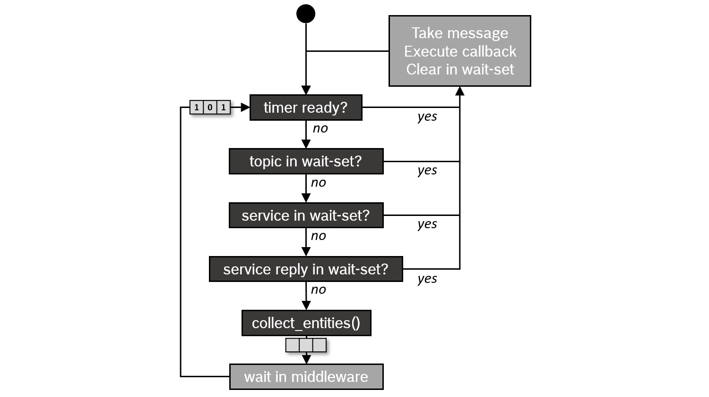

ros2 执行器#
ROS2 中的执行管理由执行器处理。执行器使用底层操作系统的一个或多个线程来调用订阅、定时器、服务服务器、动作服务器等的回调，以响应传入的消息和事件。
- 参考：https://docs.ros.org/en/humble/Concepts/Intermediate/About-Executors.html
基本用法#
int main(int argc, char* argv[])
{
// Some initialization.
rclcpp::init(argc, argv);
...
// Instantiate a node.
rclcpp::Node::SharedPtr node = ...
// Run the executor.
rclcpp::spin(node);
// Shutdown and exit.
...
return 0;
}
- 对
spin(node)的调用基本上扩展为单线程执行器的实例化和调用，这是最简单的执行器：
- 通过调用执行器实例的
spin()，当前线程开始查询 rcl 和中间件层的传入消息和其他事件，并调用相应的回调函数，直到节点关闭。 - 为了不影响中间件的 QoS 设置，在客户端库层不会将传入消息存储在队列中，而是在中间件中保持，直到由回调函数进行处理

执行器类型#
- Executor
- SingleThreadExecutor : 单线程
- MultiThreadExecutor ： 多线程
- StaticSingleThreadedExecutor ：静态单线程执行器
- 优化了扫描节点的运行时成本，仅在节点添加时进行一次扫描，因此，静态单线程执行器必须需在初始化期间 绑定相关节点
add_node(node)；
- 优化了扫描节点的运行时成本，仅在节点添加时进行一次扫描，因此，静态单线程执行器必须需在初始化期间 绑定相关节点
回调组 (callback group)#
- 在使用多线程执行器（Multi-Threaded Executor）运行节点时，ROS2 提供了两种不同类型的回调组（callback groups）来控制回调函数的执行:
- 互斥回调组（Mutually Exclusive Callback Group）
- 组中回调只能
依次处理，像由单线程执行器执行一样
- 组中回调只能
- 可重入回调组（Reentrant Callback Group）
- 组中回调可以
并行处理, 由多个执行器并行处理
- 组中回调可以
- 互斥回调组（Mutually Exclusive Callback Group）
- 属于
不同回调组的回调始终可以 并行执行 - 所有没有指定回调组的订阅、定时器等都被分配到
默认回调组- 如果没有分配 回调组，即使指定了多线程执行器，节点实际上也会像单线程执行器一样顺序处理
-
只有在使用
多线程执行器才需要配置回调组 -
互斥回调组 在回调
同步调用服务或动作时 可能会导致死锁 ，由于是单线程执行 - 可重入回调组 需要注意
共享资源的保护
调度语义#
- 执行器基本上按照先进先出（FIFO）的顺序处理
- 如果同时进来多个事件 (timer,topic) , 处理顺序如下：

示例 MinimalPublisher#
- 以基本的
MinimalPublisher作为示例分析 - 代码：https://docs.ros.org/en/humble/Tutorials/Beginner-Client-Libraries/Writing-A-Simple-Cpp-Publisher-And-Subscriber.html
int main(int argc, char * argv[])
{
rclcpp::init(argc, argv);
rclcpp::spin(std::make_shared<MinimalPublisher>());
rclcpp::shutdown();
return 0;
}
- 序列图如下：
- 可以看到通过单个线程等待事件 依次处理(timer,subscription,service,client)
MinimalPublisher 堆栈分析#
可以看到线程主要分为两部分 :
- ros相关：
- Spin 线程 (Thread1) ：主要事件等待处理线程 (
Executor::wait_for_work)- 底层实现 通过 dds
dds::detail::WaitSetImpl::wait
- 底层实现 通过 dds
- signal 线程 (Thread2) ： 等待处理 结束信号 (SIGINT/SIGTERM)
- Spin 线程 (Thread1) ：主要事件等待处理线程 (
- 中间件(fastdds):
- 消息收发等处理 (Thread3-10) : 中间件所需线程，通过共享内存，UDP 等来实现传输 管理消息；
堆栈数据：
Thread 10 (Thread 0x7fffcffff640 (LWP 44294) "talker"):
#0 0x00007ffff7945117 in ?? () from /lib/x86_64-linux-gnu/libc.so.6
#1 0x00007ffff7947a41 in pthread_cond_wait () from /lib/x86_64-linux-gnu/libc.so.6
#2 0x00007ffff7170d32 in eprosima::fastdds::dds::detail::WaitSetImpl::wait(std::vector<eprosima::fastdds::dds::Condition*, std::allocator<eprosima::fastdds::dds::Condition*> >&, eprosima::fastrtps::Time_t const&) () from /opt/ros/humble/lib/libfastrtps.so.2.6
#3 0x00007ffff7170daa in eprosima::fastdds::dds::WaitSet::wait(std::vector<eprosima::fastdds::dds::Condition*, std::allocator<eprosima::fastdds::dds::Condition*> >&, eprosima::fastrtps::Time_t) const () from /opt/ros/humble/lib/libfastrtps.so.2.6
#4 0x00007ffff75eca44 in rmw_fastrtps_shared_cpp::__rmw_wait(char const*, rmw_subscriptions_s*, rmw_guard_conditions_s*, rmw_services_s*, rmw_clients_s*, rmw_events_s*, rmw_wait_set_s*, rmw_time_s const*) () from /opt/ros/humble/lib/librmw_fastrtps_shared_cpp.so
#5 0x00007ffff75d8502 in ?? () from /opt/ros/humble/lib/librmw_fastrtps_shared_cpp.so
#6 0x00007ffff7bd9253 in ?? () from /lib/x86_64-linux-gnu/libstdc++.so.6
#7 0x00007ffff7948ac3 in ?? () from /lib/x86_64-linux-gnu/libc.so.6
#8 0x00007ffff79da8c0 in ?? () from /lib/x86_64-linux-gnu/libc.so.6
Thread 9 (Thread 0x7fffda6eb640 (LWP 44293) "talker"):
#0 0x00007ffff7945117 in ?? () from /lib/x86_64-linux-gnu/libc.so.6
#1 0x00007ffff7947a41 in pthread_cond_wait () from /lib/x86_64-linux-gnu/libc.so.6
#2 0x00007ffff71d2495 in eprosima::fastdds::rtps::FlowControllerImpl<eprosima::fastdds::rtps::FlowControllerSyncPublishMode, eprosima::fastdds::rtps::FlowControllerFifoSchedule>::run() () from /opt/ros/humble/lib/libfastrtps.so.2.6
#3 0x00007ffff7bd9253 in ?? () from /lib/x86_64-linux-gnu/libstdc++.so.6
#4 0x00007ffff7948ac3 in ?? () from /lib/x86_64-linux-gnu/libc.so.6
#5 0x00007ffff79da8c0 in ?? () from /lib/x86_64-linux-gnu/libc.so.6
Thread 8 (Thread 0x7fffde7ac640 (LWP 44292) "talker"):
#0 0x00007ffff79db7f4 in recvfrom () from /lib/x86_64-linux-gnu/libc.so.6
#1 0x00007ffff70b2580 in eprosima::fastdds::rtps::UDPChannelResource::Receive(unsigned char*, unsigned int, unsigned int&, eprosima::fastrtps::rtps::Locator_t&) () from /opt/ros/humble/lib/libfastrtps.so.2.6
#2 0x00007ffff70b2946 in eprosima::fastdds::rtps::UDPChannelResource::perform_listen_operation(eprosima::fastrtps::rtps::Locator_t) () from /opt/ros/humble/lib/libfastrtps.so.2.6
#3 0x00007ffff70ad4cb in ?? () from /opt/ros/humble/lib/libfastrtps.so.2.6
#4 0x00007ffff7bd9253 in ?? () from /lib/x86_64-linux-gnu/libstdc++.so.6
#5 0x00007ffff7948ac3 in ?? () from /lib/x86_64-linux-gnu/libc.so.6
#6 0x00007ffff79da8c0 in ?? () from /lib/x86_64-linux-gnu/libc.so.6
Thread 7 (Thread 0x7fffe27ad640 (LWP 44291) "talker"):
#0 0x00007ffff7945117 in ?? () from /lib/x86_64-linux-gnu/libc.so.6
#1 0x00007ffff7950a53 in ?? () from /lib/x86_64-linux-gnu/libc.so.6
#2 0x00007ffff726a4da in ?? () from /opt/ros/humble/lib/libfastrtps.so.2.6
#3 0x00007ffff726ad4c in ?? () from /opt/ros/humble/lib/libfastrtps.so.2.6
#4 0x00007ffff7268527 in eprosima::fastdds::rtps::SharedMemChannelResource::perform_listen_operation(eprosima::fastrtps::rtps::Locator_t) () from /opt/ros/humble/lib/libfastrtps.so.2.6
#5 0x00007ffff726bb6b in ?? () from /opt/ros/humble/lib/libfastrtps.so.2.6
#6 0x00007ffff7bd9253 in ?? () from /lib/x86_64-linux-gnu/libstdc++.so.6
#7 0x00007ffff7948ac3 in ?? () from /lib/x86_64-linux-gnu/libc.so.6
#8 0x00007ffff79da8c0 in ?? () from /lib/x86_64-linux-gnu/libc.so.6
Thread 6 (Thread 0x7fffe67ae640 (LWP 44290) "talker"):
#0 0x00007ffff79db7f4 in recvfrom () from /lib/x86_64-linux-gnu/libc.so.6
#1 0x00007ffff70b2580 in eprosima::fastdds::rtps::UDPChannelResource::Receive(unsigned char*, unsigned int, unsigned int&, eprosima::fastrtps::rtps::Locator_t&) () from /opt/ros/humble/lib/libfastrtps.so.2.6
#2 0x00007ffff70b2946 in eprosima::fastdds::rtps::UDPChannelResource::perform_listen_operation(eprosima::fastrtps::rtps::Locator_t) () from /opt/ros/humble/lib/libfastrtps.so.2.6
#3 0x00007ffff70ad4cb in ?? () from /opt/ros/humble/lib/libfastrtps.so.2.6
#4 0x00007ffff7bd9253 in ?? () from /lib/x86_64-linux-gnu/libstdc++.so.6
#5 0x00007ffff7948ac3 in ?? () from /lib/x86_64-linux-gnu/libc.so.6
#6 0x00007ffff79da8c0 in ?? () from /lib/x86_64-linux-gnu/libc.so.6
Thread 5 (Thread 0x7fffea7af640 (LWP 44289) "talker"):
#0 0x00007ffff79db7f4 in recvfrom () from /lib/x86_64-linux-gnu/libc.so.6
#1 0x00007ffff70b2580 in eprosima::fastdds::rtps::UDPChannelResource::Receive(unsigned char*, unsigned int, unsigned int&, eprosima::fastrtps::rtps::Locator_t&) () from /opt/ros/humble/lib/libfastrtps.so.2.6
#2 0x00007ffff70b2946 in eprosima::fastdds::rtps::UDPChannelResource::perform_listen_operation(eprosima::fastrtps::rtps::Locator_t) () from /opt/ros/humble/lib/libfastrtps.so.2.6
#3 0x00007ffff70ad4cb in ?? () from /opt/ros/humble/lib/libfastrtps.so.2.6
#4 0x00007ffff7bd9253 in ?? () from /lib/x86_64-linux-gnu/libstdc++.so.6
#5 0x00007ffff7948ac3 in ?? () from /lib/x86_64-linux-gnu/libc.so.6
#6 0x00007ffff79da8c0 in ?? () from /lib/x86_64-linux-gnu/libc.so.6
Thread 4 (Thread 0x7fffee7b0640 (LWP 44288) "talker"):
#0 0x00007ffff7945117 in ?? () from /lib/x86_64-linux-gnu/libc.so.6
#1 0x00007ffff79482dd in pthread_cond_clockwait () from /lib/x86_64-linux-gnu/libc.so.6
#2 0x00007ffff6fc6661 in eprosima::fastrtps::rtps::ResourceEvent::event_service() () from /opt/ros/humble/lib/libfastrtps.so.2.6
#3 0x00007ffff7bd9253 in ?? () from /lib/x86_64-linux-gnu/libstdc++.so.6
#4 0x00007ffff7948ac3 in ?? () from /lib/x86_64-linux-gnu/libc.so.6
#5 0x00007ffff79da8c0 in ?? () from /lib/x86_64-linux-gnu/libc.so.6
Thread 3 (Thread 0x7ffff2838640 (LWP 44287) "talker"):
#0 0x00007ffff7945117 in ?? () from /lib/x86_64-linux-gnu/libc.so.6
#1 0x00007ffff79482dd in pthread_cond_clockwait () from /lib/x86_64-linux-gnu/libc.so.6
#2 0x00007ffff725d8e1 in eprosima::fastdds::rtps::SharedMemWatchdog::run() () from /opt/ros/humble/lib/libfastrtps.so.2.6
#3 0x00007ffff7bd9253 in ?? () from /lib/x86_64-linux-gnu/libstdc++.so.6
#4 0x00007ffff7948ac3 in ?? () from /lib/x86_64-linux-gnu/libc.so.6
#5 0x00007ffff79da8c0 in ?? () from /lib/x86_64-linux-gnu/libc.so.6
Thread 2 (Thread 0x7ffff6839640 (LWP 44286) "talker"):
#0 0x00007ffff7945117 in ?? () from /lib/x86_64-linux-gnu/libc.so.6
#1 0x00007ffff7950c78 in ?? () from /lib/x86_64-linux-gnu/libc.so.6
#2 0x00007ffff7f23972 in rclcpp::SignalHandler::wait_for_signal() () from /opt/ros/humble/lib/librclcpp.so
#3 0x00007ffff7f2494e in rclcpp::SignalHandler::deferred_signal_handler() () from /opt/ros/humble/lib/librclcpp.so
#4 0x00007ffff7bd9253 in ?? () from /lib/x86_64-linux-gnu/libstdc++.so.6
#5 0x00007ffff7948ac3 in ?? () from /lib/x86_64-linux-gnu/libc.so.6
#6 0x00007ffff79da8c0 in ?? () from /lib/x86_64-linux-gnu/libc.so.6
Thread 1 (Thread 0x7ffff7667f40 (LWP 44270) "talker"):
#0 0x00007ffff7945117 in ?? () from /lib/x86_64-linux-gnu/libc.so.6
#1 0x00007ffff79482dd in pthread_cond_clockwait () from /lib/x86_64-linux-gnu/libc.so.6
#2 0x00007ffff7170bbd in eprosima::fastdds::dds::detail::WaitSetImpl::wait(std::vector<eprosima::fastdds::dds::Condition*, std::allocator<eprosima::fastdds::dds::Condition*> >&, eprosima::fastrtps::Time_t const&) () from /opt/ros/humble/lib/libfastrtps.so.2.6
#3 0x00007ffff7170daa in eprosima::fastdds::dds::WaitSet::wait(std::vector<eprosima::fastdds::dds::Condition*, std::allocator<eprosima::fastdds::dds::Condition*> >&, eprosima::fastrtps::Time_t) const () from /opt/ros/humble/lib/libfastrtps.so.2.6
#4 0x00007ffff75eca44 in rmw_fastrtps_shared_cpp::__rmw_wait(char const*, rmw_subscriptions_s*, rmw_guard_conditions_s*, rmw_services_s*, rmw_clients_s*, rmw_events_s*, rmw_wait_set_s*, rmw_time_s const*) () from /opt/ros/humble/lib/librmw_fastrtps_shared_cpp.so
#5 0x00007ffff7644887 in rmw_wait () from /opt/ros/humble/lib/librmw_fastrtps_cpp.so
#6 0x00007ffff7da4838 in rcl_wait () from /opt/ros/humble/lib/librcl.so
#7 0x00007ffff7ea9a0c in rclcpp::Executor::wait_for_work(std::chrono::duration<long, std::ratio<1l, 1000000000l> >) () from /opt/ros/humble/lib/librclcpp.so
#8 0x00007ffff7eac763 in rclcpp::Executor::get_next_executable(rclcpp::AnyExecutable&, std::chrono::duration<long, std::ratio<1l, 1000000000l> >) () from /opt/ros/humble/lib/librclcpp.so
#9 0x00007ffff7eb3d11 in rclcpp::executors::SingleThreadedExecutor::spin() () from /opt/ros/humble/lib/librclcpp.so
#10 0x00007ffff7eb3f93 in rclcpp::spin(std::shared_ptr<rclcpp::node_interfaces::NodeBaseInterface>) () from /opt/ros/humble/lib/librclcpp.so
#11 0x00007ffff7eb40ef in rclcpp::spin(std::shared_ptr<rclcpp::Node>) () from /opt/ros/humble/lib/librclcpp.so
#12 0x000055555555e788 in main (argc=1, argv=0x7fffffffe048) at /root/ws/ros2-testbench/src/cpp_example/cpp_pubsub/src/publisher_lambda_function.cpp:40